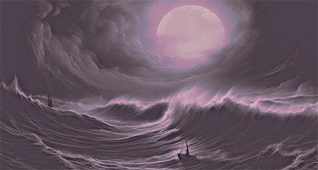

Мы обучили нашу систему на информации большинства существующих источников о влиянии небесных тел - от самых древних до современных, более тысячи трудов и исследований

Волею судьбы тебе открывается доступ к самой точной и персонализированной астрологии в истории человечества
Мы обучили нашу систему на информации большинства существующих источников о влиянии небесных тел - от самых древних до современных, более тысячи трудов и исследований
Созданная нами, постоянно обучающаяся модель искусственного интеллекта, обеспечивает самый глубокий анализ, создавая наиболее точные и персонализированные прогнозы

Полученный нами результат недостижим ни одним астрологом - люди ошибаются, возможности человеческого мозга ограничены. Компьютеры надежны и всегда точны

Гравитация Луны способна перемещать океаны - миллиарды тон воды, создавая приливы и отливы. Это реальная энергия, которую можно измерить используя точные науки, а результаты ее влияния увидеть собственными глазами. А большие звездные тела способны искажать ткань пространства-времени своим гравитационным влиянием
Человек - Архитектор своей судьбы, но без надежных инструментов не возможно воплотить в жизнь свои планы, мы даем тебе эти итнструменты